O que é SiMOn?
O SiMOn (Sistema de Monitoramento Online) é uma plataforma corporativa desenvolvida para acompanhar, processar e analisar dados de produção no ambiente industrial da Grendene. Ele centraliza informações provenientes de máquinas, apontamentos dos operadores e registros automatizados, oferecendo uma leitura clara e confiável do desempenho fabril. Sua arquitetura foi pensada para garantir rapidez, precisão e padronização, permitindo que cada etapa da operação seja monitorada com transparência.
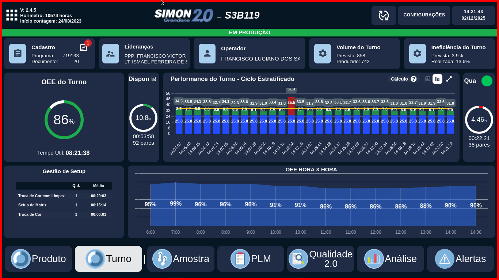O propósito central do SiMOn é transformar dados brutos — muitas vezes dispersos entre equipes, apontamentos manuais e sistemas paralelos — em indicadores estruturados e totalmente rastreáveis. Ao consolidar essas informações, o sistema se torna um único ponto de verdade para a gestão industrial, possibilitando decisões rápidas, embasadas e alinhadas com as metas estratégicas da organização.
Atualmente, o SiMOn é responsável pelo cálculo automático do OEE (Overall Equipment Effectiveness) em diferentes níveis: por equipamento, por turno, por setor e por fábrica. O sistema registra eventos como paradas, setups, perdas de qualidade, perdas de velocidade e demais variáveis que influenciam o desempenho operacional. Além disso, monitora em tempo real, permitindo a rápida identificação de desvios e oportunidades de correção.
Os usuários do SiMOn abrangem um amplo espectro dentro da fábrica: operadores, líderes de linha, supervisores, PCP, engenharia, áreas de apoio entre outras equipes. Cada perfil visualiza apenas o necessário ao seu trabalho, garantindo foco e eficiência. Para o operador, o sistema facilita o apontamento e acompanhamento do dia a dia; para gestores, oferece painéis consolidados, históricos, comparativos e análises de causa raiz.
Funcionalmente, o SiMOn oferece módulos dedicados ao acompanhamento da produção, registro de paradas, análise de OEE, visualização de tendências, relatórios operacionais, dashboards, controle de metas e acompanhamento de perdas. Sua interface promove a padronização operacional e reduz significativamente erros e retrabalhos, já que todas as informações permanecem integradas e seguem o mesmo modelo de leitura e processamento.
Com sua ampla capacidade de monitoramento e estrutura organizada, o SiMOn se consolida como uma ferramenta indispensável para a gestão fabril moderna. Ele não apenas registra dados, mas gera inteligência operacional — sendo o alicerce para projetos de melhoria contínua, planejamento estratégico, digitalização da fábrica e evolução para soluções com IA, analytics e automação avançada.
Como analisar os dados do SiMOn?
A análise dos dados do SiMOn é realizada principalmente por meio do sistema Elipse, plataforma utilizada para consulta, extração e monitoramento das informações registradas em tempo real. O Elipse permite que usuários baixem relatórios em formato CSV contendo todos os eventos, apontamentos e indicadores coletados pelo SiMOn ao longo da operação, oferecendo total rastreabilidade dos dados.
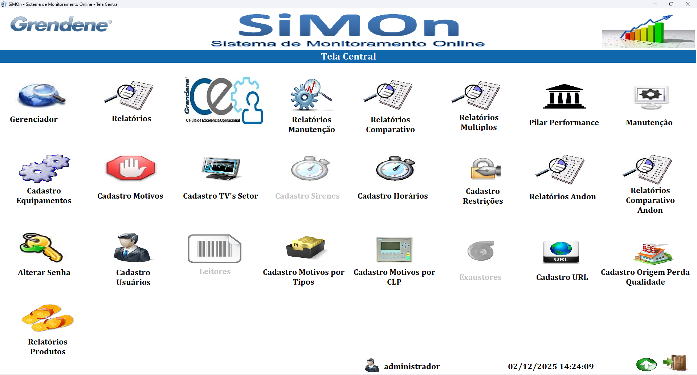Esses relatórios em CSV são essenciais para análises detalhadas, pois fornecem a visão bruta dos registros, permitindo a construção de gráficos, dashboards e estudos personalizados. O operador ou analista pode filtrar informações por equipamento, linha, turno, datas, motivos de paradas, setups, tempo produtivo, tempo improdutivo e diversos outros parâmetros importantes para o entendimento da performance diária.
Dentro da análise dos dados, um dos indicadores mais relevantes é o OEE (Overall Equipment Effectiveness). Ele é utilizado para medir a eficiência real de um processo produtivo, levando em consideração todas as perdas que afetam o desempenho da fábrica. No SiMOn, o OEE é calculado automaticamente com base nos eventos registrados pelos operadores e pelos equipamentos.
O cálculo do OEE no SiMOn segue a fórmula:
% OEE = 100% - (Perdas de Disponibilidade + Perdas de Performance + Perdas de Qualidade)
Esse método torna o indicador mais intuitivo ao mostrar imediatamente o quanto a produção está perdendo em cada dimensão. As perdas de disponibilidade representam o tempo em que o equipamento deveria estar produzindo, mas não esteve; as perdas de qualidade consideram produtos rejeitados ou retrabalhos; e as perdas de performance refletem a velocidade real da produção comparada ao ritmo ideal.
A partir dessa estrutura, o SiMOn permite que equipes identifiquem com precisão onde estão as principais perdas, qual equipamento ou setor sofre maior impacto e quais ações corretivas podem gerar melhor resultado. Combinando a extração de dados via Elipse com o entendimento do OEE, a análise se torna completa, confiável e totalmente orientada à melhoria contínua.
Disponibilidade
No contexto do SiMOn, disponibilidade é tratada como o tempo perdido em que a máquina não esteve disponível para produzir devido a paradas que impactam a operação. Em outras palavras, aqui a disponibilidade representa as interrupções relevantes — ou seja, os períodos em que a máquina deveria estar produzindo, mas não estava.
As paradas são classificadas em Sem Peso (programadas) e Com Peso (não programadas). As paradas programadas (por exemplo, parada para refeição ou pausa para descanso) não têm peso no cálculo do OEE e não são contabilizadas como perdas. Já as paradas não programadas são interrupções inesperadas ou problemas na linha de produção que possuem peso e entram no cálculo das perdas de disponibilidade.
As paradas que compõem as perdas de disponibilidade são organizadas por famílias, para facilitar análise e priorização das ações. Exemplos de categorias comuns:
- Produção: falhas operacionais ou interrupções no fluxo produtivo.
- Setups: trocas de modelo, ajustes e regulagens que interrompem a produção.
- Manutenção: falhas mecânicas, elétricas ou intervenções corretivas.
- Matrizaria: problemas relacionados a moldes e peças de ferramentaria.
- Tingimento: falhas ou paradas específicas do processo de tingimento.
O cálculo do percentual de perdas de disponibilidade considera apenas as paradas com peso (paradas não programadas). Para isso soma-se o tempo dessas paradas e divide-se pelo tempo útil, que é o total de tempo em que a máquina estava prevista para produzir (ou seja, já desconsiderando as paradas programadas).
% Disponibilidade = (Somatório das Paradas com Peso ÷ Tempo Útil) × 100
Observação: como o SiMOn trata a disponibilidade pela ótica das perdas, esse percentual mostra diretamente quanto do tempo útil foi consumido por interrupções relevantes — informação essencial para priorizar melhorias e reduzir o impacto no OEE.
Performance
A performance representa o quanto a máquina ou linha de produção operou na velocidade correta em relação ao ciclo padrão estabelecido pela engenharia. No SiMOn, a performance é composta por três fatores principais: ganho de ciclo, perda de ciclo e perdas por quadrados vazios ou moldes isolados. Esses elementos refletem diretamente a velocidade real de operação e sua aderência ao ritmo ideal.
O ciclo corresponde ao tempo padrão que uma esteira ou máquina injetora deve levar para completar uma unidade de produção. Quando a máquina opera mais rápido que o ciclo padrão, ocorre o chamado ganho de ciclo, representando aumento de velocidade em relação ao esperado. Quando a operação está mais lenta do que o padrão, ocorre a perda de ciclo. Ambos são contabilizados para medir o desempenho da operação.
Além disso, algumas máquinas possuem perdas específicas relacionadas ao fluxo produtivo. Em máquinas injetoras rotativas, temos os moldes isolados, que são posições do carrossel onde, por algum motivo, não há montagem, injeção ou alimentação. Já nas esteiras de montagem, temos os quadrados vazios, que representam espaços onde deveria haver um par de solados, mas o operador deixa passar vazio. Em ambos os casos, contabiliza-se um ciclo referente àquele tempo perdido, classificando-o como perda de performance.
Dessa forma, o cálculo da performance considera a soma das variações de velocidade (ganhos e perdas de ciclo) e das perdas por quadrados vazios ou moldes isolados. Para cálculo do % de Performance, utilizamos o tempo útil — ou seja, o tempo realmente disponível de produção.
A regra geral é somar todo o impacto (ganho + perdas) e dividir pelo tempo útil.
% Performance = ((Ganho de Ciclo + Perda de Ciclo + Perdas por Quadrado Vazio ou Molde Isolado) ÷ Tempo Útil) × 100
Essa lógica garante que a performance reflita, de maneira equilibrada, tanto as perdas causadas por lentidão e inconsistências do operador, quanto os ganhos reais de velocidade, mostrando com precisão o quanto a linha operou acima ou abaixo do potencial ideal definido pela engenharia.
Observação: Esse cálculo deve ser realizado desde que o ganho de ciclo seja um valor negativo, caso o mesmo esteja como positivo, deve-se ou inverter seu sinal multiplicando por -1 ou subtrair o ganho da soma das duas perdas.
Qualidade
O pilar de Qualidade no indicador OEE (Overall Equipment Effectiveness) mede a proporção de produtos que atendem plenamente aos padrões especificados, em relação ao total produzido. Ele reflete diretamente a capacidade do processo de gerar itens conformes sem retrabalho, refugos ou ajustes.
O pilar também é divido entre itens com peso e sem peso, sendo os com peso, que impactam no valor do oee, os itens sem peso são aqueles que foram identificados no processo mas que foram retrabalhados antes de passar pelo processo de transformação.
Para calcular o percentual de perdas de qualidade, usamos o seguinte cálculo:
% Qualidade = (Tempo de perda de qualidade ÷ Tempo Útil) × 100
Para se chegar ao tempo da qualidade é necessário:
Tempo de perda de qualidade = (valor × ciclo) ÷ pares batidos
O tempo de ciclo varia entre cada produto, ou seja, o tempo de perda de um par em um produto pode não ser o mesmo de um produto de outra marca ou modelo.
SiMOn 2.0
O SiMOn 2.0 é a evolução do sistema de monitoramento online da Grendene, trazendo melhorias significativas em relação à versão anterior. Com uma arquitetura mais robusta e escalável, o SiMOn 2.0 oferece maior confiabilidade na coleta e processamento dos dados, além de uma interface mais intuitiva e amigável para os usuários finais.
Essa interface fica diretamente aos cuidados da produção, onde os operadores realizam os apontamentos e indicam ao sistema os principais gargalos durante o processo produtivo.
Inteface do sistema
A interface do SiMOn 2.0 foi desenvolvida com foco na necessidade de cada processo produtivo, atualmente o sistema compõe grande parte dos equipamentos da Grendene S/A, desde o processo de injeção de termoplasticos até o processo de embalamento final dos produtos.
Devido a essa diversidade de processos, o SiMOn 2.0 conta com diferentes interfaces para cada tipo de departamento produtivo, cada uma delas desenvolvida para atender as necessidades específicas de cada etapa.
SiMOn 2.0 - Injeção
A interface do SiMOn 2.0 nas injeções da Grendene foi desenvolvida para facilitar o apontamento dos operadores.
A tela inicial do sistema exibe as principais informações da máquina, como o programa que está rodando, o documento, o produto, a cor, além dos dados de eficiência e um destque maior aos ciclos que a máquina está realizando
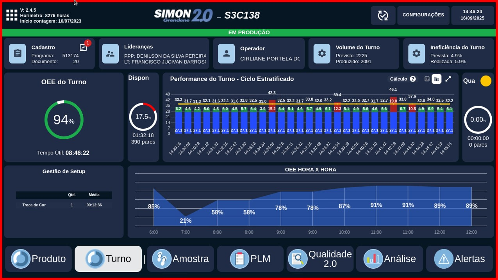Na parte superior, é possível encontrar alguns botões de navegação, junto da logo do simon e o nome do equipamento. À esquerda, temos o botão de Menu, que abre uma nova tela para cadastro de operadores e líderes, além de programa/documento e ajuste no tempo máquina.
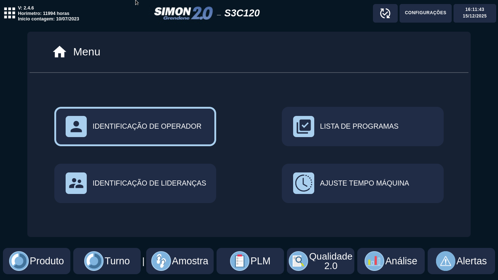Identificação operador
Na identificação do operador, o usuário deve ler o crachá no leitor RFID, e o mesmo irá digitar automaticamente o código do crachá do usuário, ou se preferir o usuário poderá digitar o código usando o teclado do SiMOn.
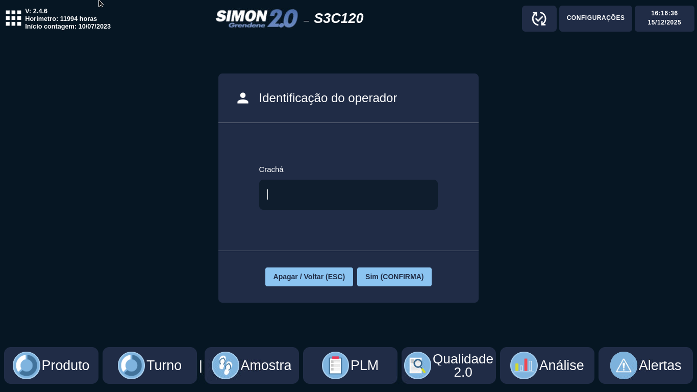Identificação lideranças
Na identificação das lideranças o usuário deverá selecionar o preparador e lider técnico da máquina, dentre as opções estarão apenas colaboradores cadastrados no centro de custo da fábrica a fim de facilitar a busca, o usuário pode optar pela digitação do crachá do gestor caso não encontre o mesmo na lista.

Após a identificação do operador e das lideranças, o usuário deve cadastrar qual o programa e documento que está rodando na máquina. O SiMOn 2.0 tem integração com outros sistemas Grendene, como TOTVS e PREACTOR, através disso o sistema consegue identificar quais são os programas disponíveis para produzir em cada uma das máquinas, quando o usuário abre a opção Lista de programas, ele se depara com um grid de itens para escolher o programa e documento correto.
Nessa tela ele verá a carga horária de produção de cada item, e poderá digitar o código caso não encontre na lista de programas
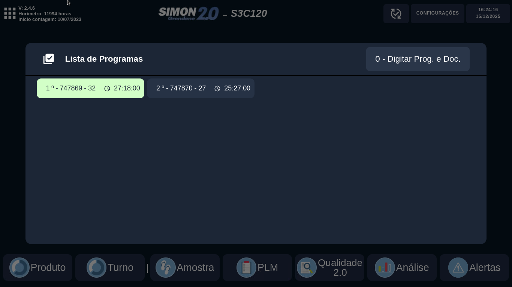Ajuste tempo máquina
Na opção de ajuste do tempo máquina, o usuário poderá alterar o tempo padrão da máquina, caso o mesmo esteja diferente do que foi configurado no sistema.
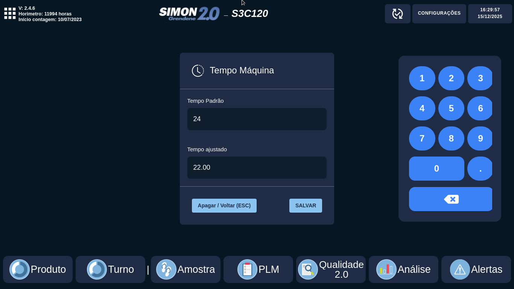Observação: Essa alteração deve ser feita pelo líder ou supervisor do setor, e o tempo ajustado deve ser o mais próximo possível do tempo padrão da máquina.
Voltando para a tela inicial, na parte superior direita o usuário tem a disposição um relógio para acompanhar o horário atual e a data, para facilitar durante os apontamentos.
Configurações
A esquerda do relógio, o usuário encontra o botão de Configurações, onde será possível verificar as informações de status das máquinas, IP, versão do sistema, além de opções para reiniciar o sistema ou desligar a máquina.
Também é possível verificar as entradas e saídas de sensores ligados ao CLP da máquina, tais como o sensor de ciclos e saídas para as luzes do andon. Cada sinal recebido ou enviado pelo SiMOn é identificado através dos círculos verdes que piscam conforme o sinal.
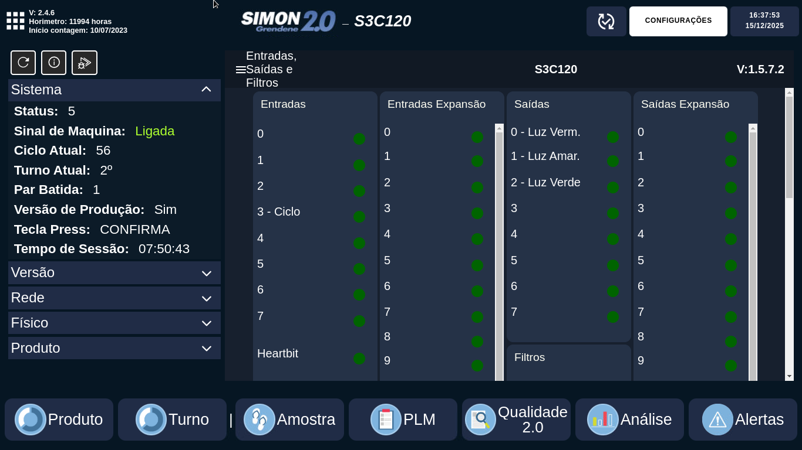Registro de mudanças
Também na parte superior direita, o usuário encontra o botão de Atualizações, onde poderá encontrar os registros de atualizações do sistema, as últimas alterações feitas pelo time de T.I.
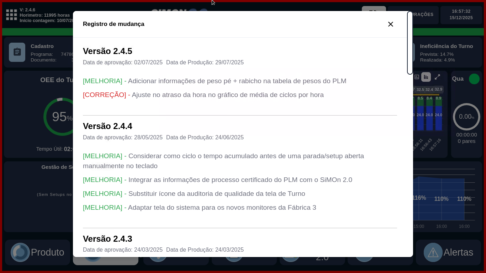indicativo de produção
O SiMOn 2.0 conta com uma barra de indicativo de produção, quando a máquina está produzindo, a mesma toma uma coloração verde, quando a máquina está com uma parada, a mesma fica com a cor vermelha, e quando a parada é do tipo apoio, a mesma fica azul. Tudo isso para dar um indicativo visual do status da máquina.
Informações de cadastros
Abaixo da tarja indicativa, o usuário encontra as informações de cadastros, como o operador, preparador, líder técnico, programa e documento, além do volume previsto e realizado da máquina, e da ineficiência prevista e realizada.
Etapas de confirmação da carga
Dentro das informações de programa e documento, existe um ícone de etapas, onde é possível identificar as etapas que o usuário teve desde a abertura da tela até a confirmação da carga.
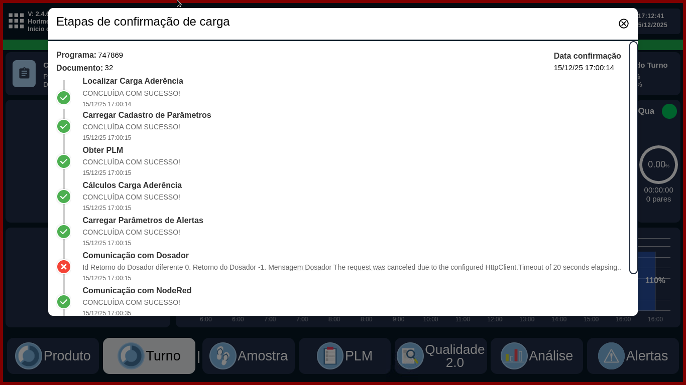Dashboard de eficiência
Abaixo das informações de cadastros, o usuário encontra o dashboard de eficiência, onde é possível acompanhar em tempo real os pilares do OEE, disponibilidade, performance, qualidade, setups, ciclos e OEE total.
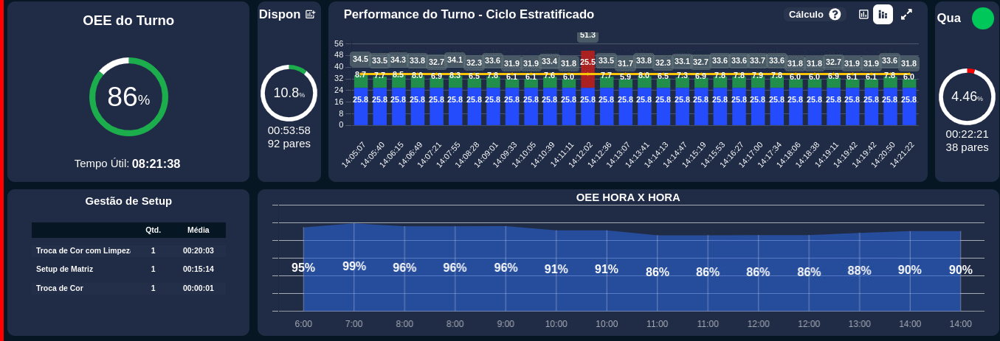Menu de navegação
Ao final da tela inicial, o usuário encontra o menu de navegação, onde é possível navegar entre as páginas do SiMOn 2.0, sendo elas:

1. Tela de Produtos
Na tela de produtos, o usuário pode visualizar os dados do produto que está rodando em tempo real, o OEE e os pilares do produto.
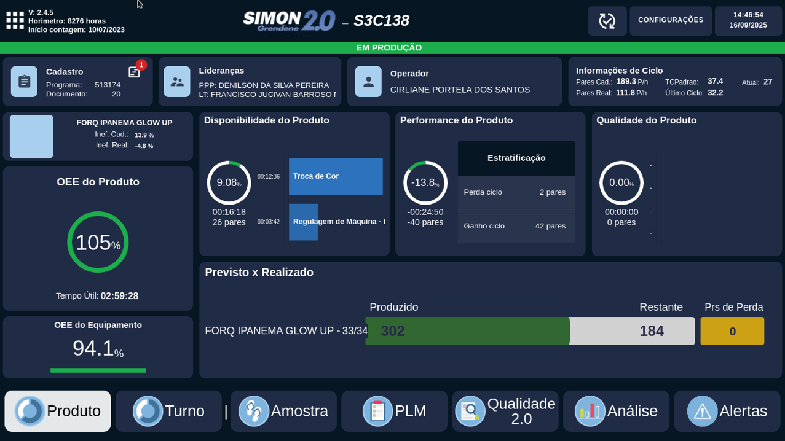Observação: Os dados exibidos na tela de produtos independem do turno, ou seja, se o mesmo produto for rodado em diferentes turnos, o dado será o mesmo, pois o SiMOn 2.0 trata os dados de produto de forma consolidada.
2. Tela de Turno
Na tela de turno, o usuário pode visualizar os dados do turno em questão rodando em tempo real, o OEE e os pilares do produto.
Observação: Os dados exibidos na tela de mudam conforme os horários cadastrados de início e fim de cada turno, ou seja, sempre que o turno iniciar, a tela de produtos deve estar com o indicador de OEE em 100% e sem perdas nos pilares.
3. Tela de Amostra
A tela de amostra é utilizada para dar ao usuário uma prévia de como é o modelo do produto que está sendo produzido na máquina, isso é importante para fazer comparativos entre o que está sendo produzido e o que foi planejado pelo time de design da empresa.
O usuário também consegue rotacionar o produto e dar zoom ao colocar o mouse sobre a imagem.
3. Tela de PLM
A tela de PLM é a tela onde é possível o usuário visualizar todas as operações do processo e as especificações do produto, tais como:
- Numeração do componente
- Referencia de matriz
- Quantidade de matriz
- Recalque
- Dosagem
- Detalhamento do ciclo
- Tempo de ciclo
3. Tela de Qualidade 2.0
A tela do Qualidade 2.0, mostra os dados que a equipe de Qualidade registrou durante as auditorias de qualidade que são feitas diariamente nas máquinas.
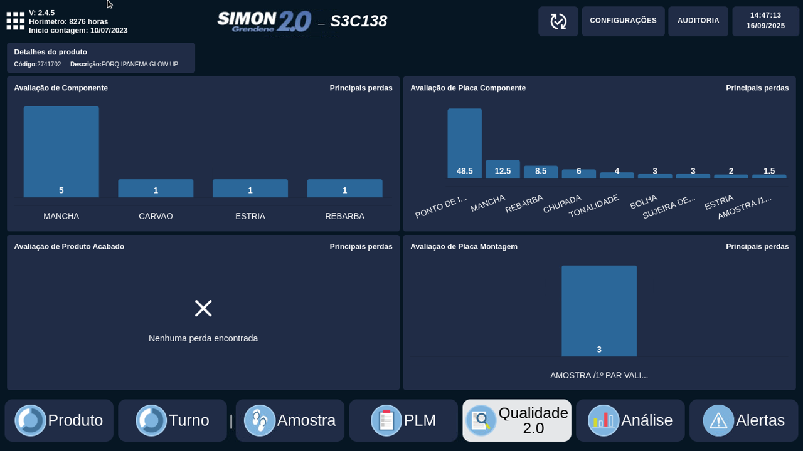Observação: Os dados do Qualidade 2.0 não necessariamente serão iguais aos dados do pilar de qualidade do SiMOn 2.0, pois os dados do time de qualidade só correspondem ao período da auditoria, e não ao período total de produção da máquina.
3. Tela de Análise
A tela de análise é a tela onde o usuário pode visualizar os dados históricos de produção da máquina, além de gráficos de disponibilidade, performance, qualidade e OEE.
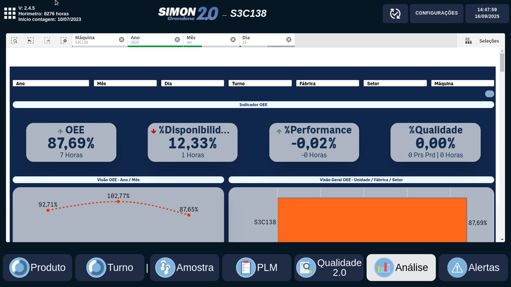3. Tela de Alertas
A tela de alertas trás um histórico de alertas que foram registrados na máquina, a tela faz separação entre alertas amarelos e vermelhos, além de mostrar o tempo de cada alerta e o motivo.
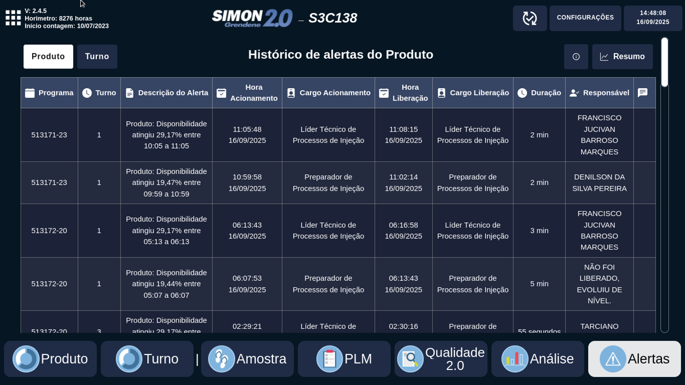Observação: Os alertas são registrados automaticamente através de parâmetros configurados no SiMOn 2.0, usando parâmetros imputados no SiMOn Cadastros.
SiMOn Elipse
O Sistema SiMOn centraliza seus dados em um aplicativo onde o usuário final consegue analisar e gerar relatórios em tempo real, o mesmo permite a análise e geração de dados que, quando combinados, podem criar insights valiosos para as áreas que tratam informações relacionadas à eficiência.
A interface do sistema é bastante simplificada e intuitiva. Ao abrir o programa, o usuário se depara com a tela de login do sistema:
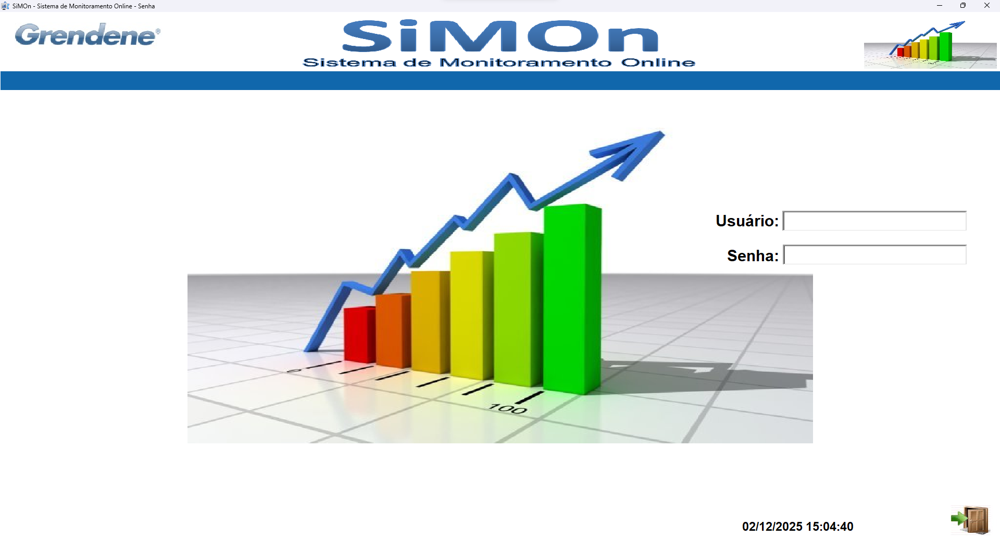Para a geração de relatórios, e análise dos pilares do OEE, não se faz necessário o uso das credenciais do sistema, então o usuário pode clicar Enter duas vezes para ir à tela principal como visualizador.
Na tela principal do Elipse é possível encontrar os itens necessários para geração de relatórios e verificação das máquinas existentes com SiMOn 1.0 e SiMOn 2.0
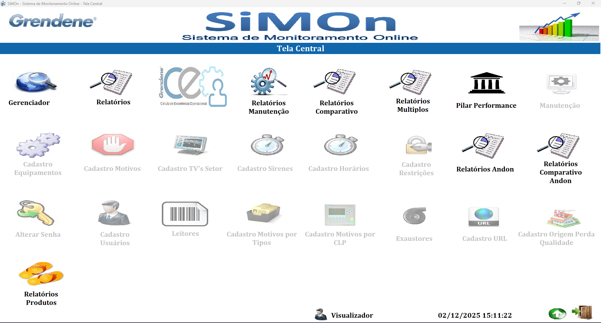1. Gerenciador
Ao clicar no ícone de gerenciador, o usuário é redirecionado para a tela principal onde verá um mapa das unidades produtivas da Grendene, ao clicar duas vezes em uma cidade, uma nova janela será aberta, permitindo ao usuário escolher uma fábrica e por conseguinte um setor:
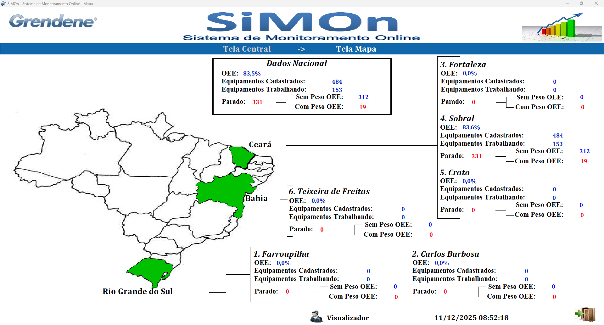 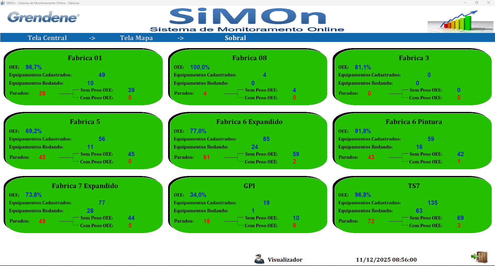 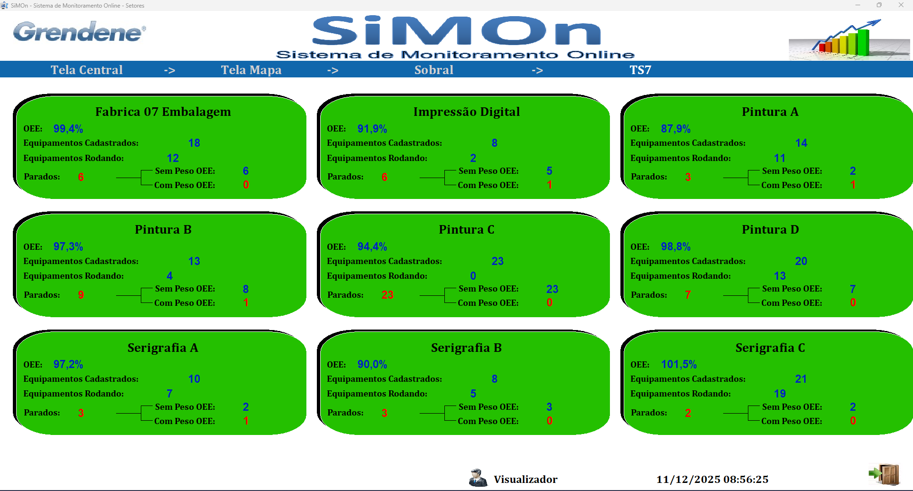Após seleção é possível identificar as máquinas de cada fábrica e setor, e o status de cada uma delas:
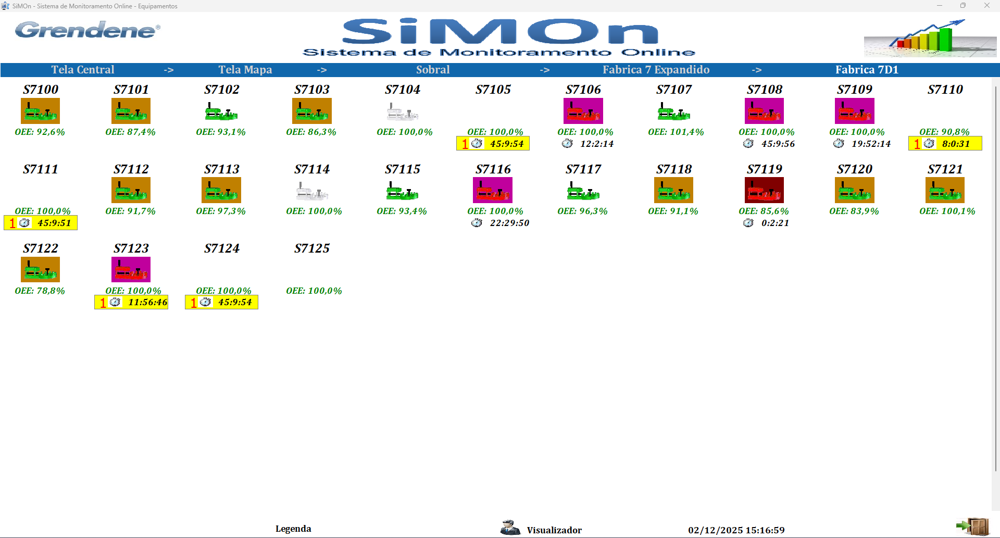No Elipse, as cores seguem um padrão que representa o status de cada uma, a tabela a seguir exemplifica cada uma das cores e suas legendas:
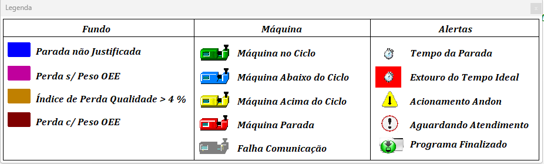Clicando duas vezes em uma máquina, o programa abre um pop-up com os detalhes sobre o respectivo equipamento, no mesmo podemos verificar o programa, documento e produto que está sendo trabalhado naquele momento na máquina, assim como o código da cor, a quantidade de pares produzidos e a produzir, além dos percentuais e tempos de ciclo. O ip de cada máquina também é exibido, o tipo e a descrição de cada equipamento para eventuais necessidades de consulta.
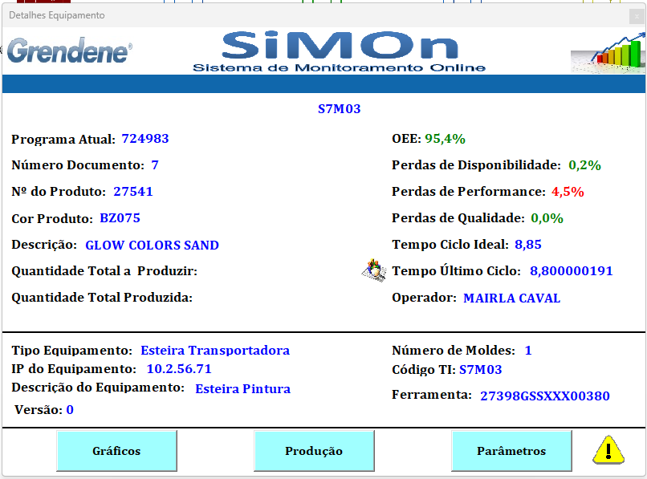Além do que já foi citado, a janela exibe três botões na parte inferior que leva o usuário para outras telas, gráficos, produção e parâmetros.
1.1 Gráficos
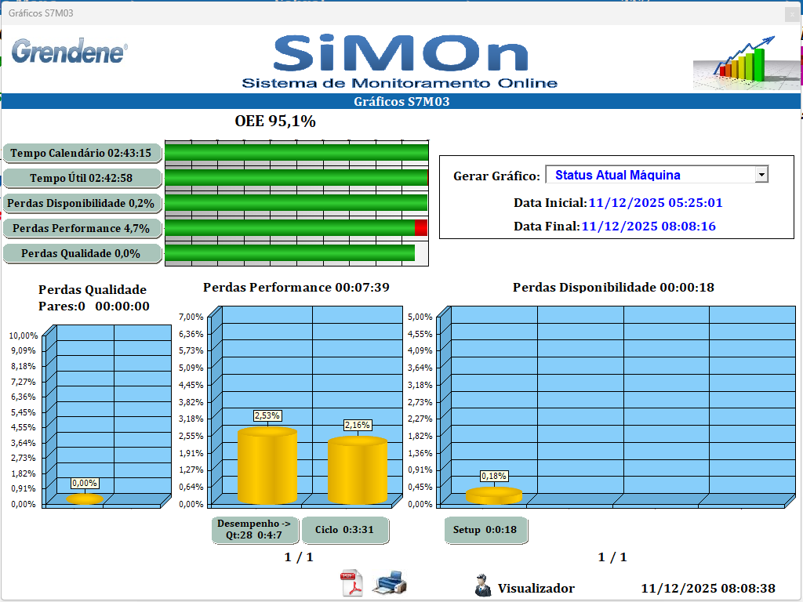A tela de gráficos exibe os dados em tempo real da máquina selecionada, nela é possível verificar os pilares do OEE, disponibilidade, performance e qualidade, além do OEE total da máquina. Cada pilar exibe o percentual atual e o tempo produtivo e improdutivo, assim como as perdas de qualidade e disponibilidade e os índices de performance.
1.2 Produção
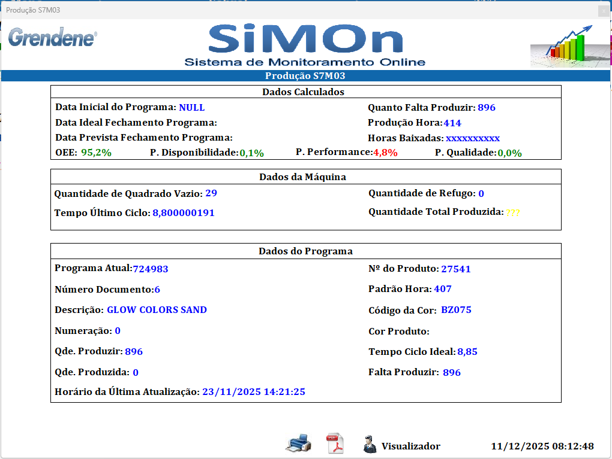A tela de produção exibe os dados de produção da máquina selecionada, nela é possível verificar a quantidade produzida, a quantidade planejada, o tempo restante para o término do lote, além de gráficos que mostram a produção ao longo do tempo.
Observação: Os dados exibidos na tela de produção poderão sofrer diferenças quando comparado ao status real de produção devido a não manutenção dessa tela dentro do SiMOn Elipse.
1.3 Parâmetros
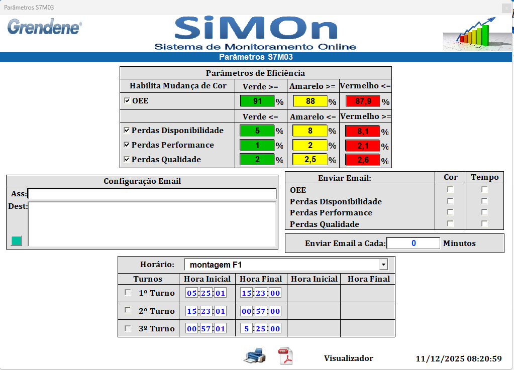A tela de parâmetros exibe as configurações de eficiência da máquina selecionada, nela é possível verificar quais percentuais ótimos, bons e ruins estão configurados para cada pilar do OEE, além do horário de funcinamento padrão do setor.
Observação: A opção de envio de email automático não está disponível para o usuário final, sendo assim, qualquer configuração feita nessa tela não surtirá efeito algum.
1.4 Últimos 30 ciclos
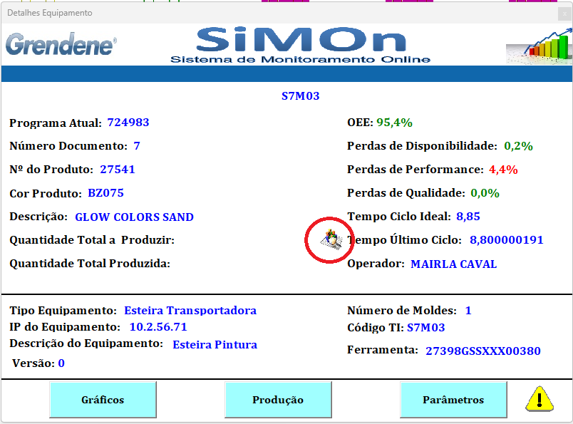 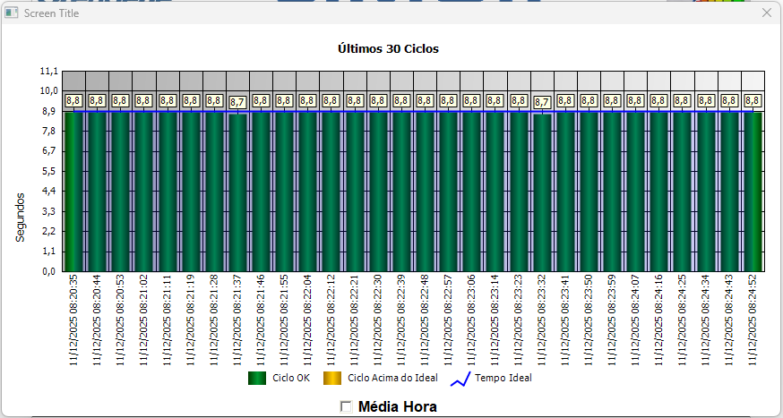A tela de últimos 30 ciclos exibe os dados dos últimos 30 ciclos da máquina selecionada, nela é possível verificar o tempo de ciclo planejado e o tempo ciclo real, além de gráficos que mostram a variação do tempo de ciclo ao longo dos últimos 30 ciclos.
2. Relatórios
No SiMOn Elipse o usuário final tem acesso a diversos relatórios que podem ser gerados para análise dos dados coletados pelo sistema, desde relatórios simples de produção até relatórios mais complexos que envolvem todos os pilares do OEE. Na tela principal é possível encontrar 8 opções de relatórios:
2.1 Relatório simples
O relatório simples permite que o usuário gere um arquivo CSV com os dados de apenas uma fábrica por vez, a tela segue um padrão simples onde o usuário seleciona a fábrica, o setor, a máquina e o período desejado para análise.
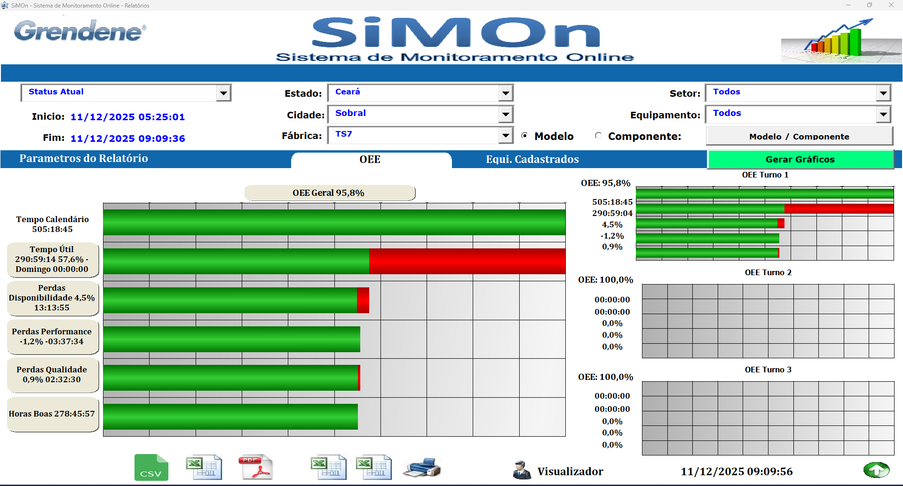O Elipse dispõe ao usuário uma gama de filtros de períodos para facilitar a geração dos relatórios, entre eles estão:
- Status Atual
- Dia Anterior
- Meses do ano
- Período personalizado

Com o relatório simples é possível extrair dados de produção, disponibilidade, performance, qualidade e OEE
2.1.1 OEE Geral
Clicando duas vezes na opção OEE Geral, o usuário é redirecionado para a tela de geração do relatório específico do OEE.
O relatório de OEE geral extrai os dados consolidados dos pilares do OEE para o período selecionado, exibindo os percentuais de disponibilidade, performance, qualidade e OEE total conforme a escolha do usuário, o usuário também poderá selecionar uma única máquina para gerar um relatório mais específico.
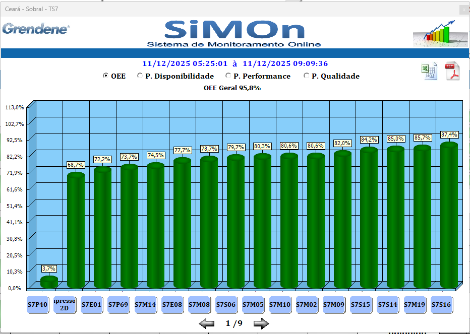Clicando no ícone do Excel, o relatório é gerado e salvo na pasta padrão de downloads de relatórios do Elipse.
C:\Users\{usuário de rede}\Desktop\Relatórios SiMOn
O relatório é gerado em formato CSV, permitindo ao usuário analisar os dados em ferramentas como Excel, Power BI ou outras plataformas de análise de dados.
Observação: Apesar do ícone de PDF estar disponível na tela de geração de relatórios, o mesmo não está funcional no SiMOn Elipse, sendo assim, o usuário só conseguirá gerar relatórios no formato CSV.
2.1.2 Tempo Útil
Clicando na opção Tempo Útil, o usuário poderá gerar relatórios de tempos improdutivos (sem peso), tanto percentuais como horas, além disso o usuário poderá escolher gerar relatórios de um motivo específico.
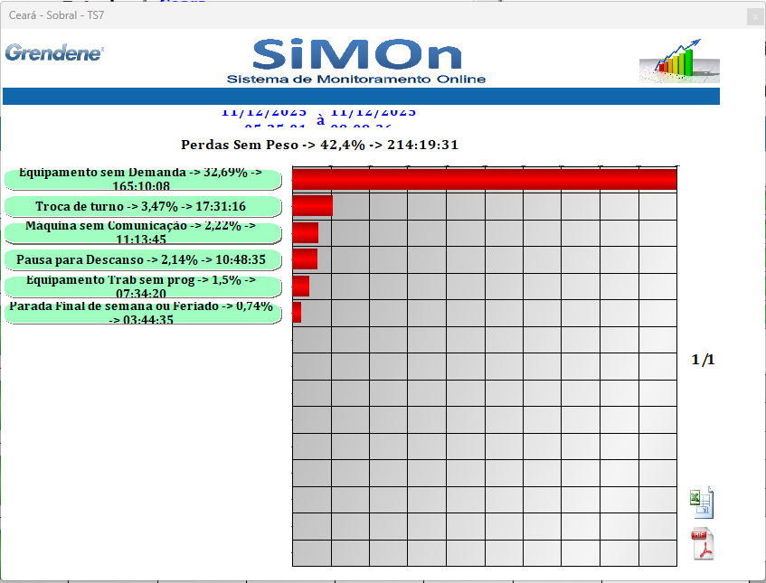2.1.3 Disponibilidade
Clicando na opção perdas de disponibilidade, o usuário poderá gerar relatórios de paradas (com peso), tanto percentuais como horas e quantidade de paradas, além disso o usuário poderá escolher gerar relatórios de um motivo específico.
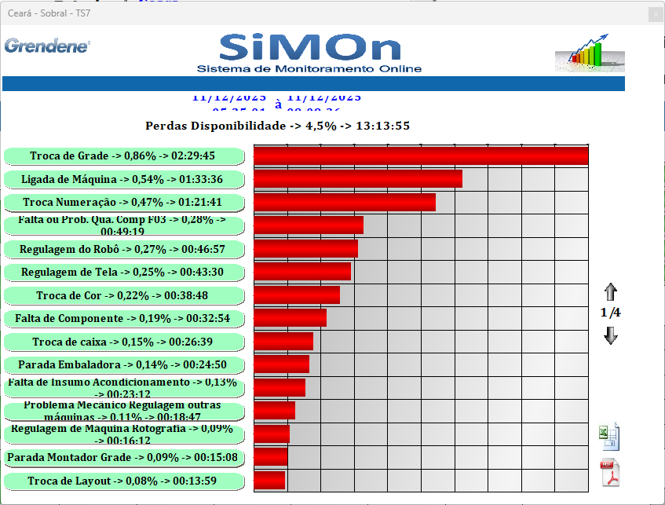2.1.4 Performance
Clicando na opção perdas de performance, o usuário poderá gerar relatórios de ganho de ciclo, perda de ciclo e quadrados vazios ou moldes isolados, tanto percentuais como horas e quantidade de ciclos, além disso o usuário poderá escolher gerar relatórios de um motivo específico.
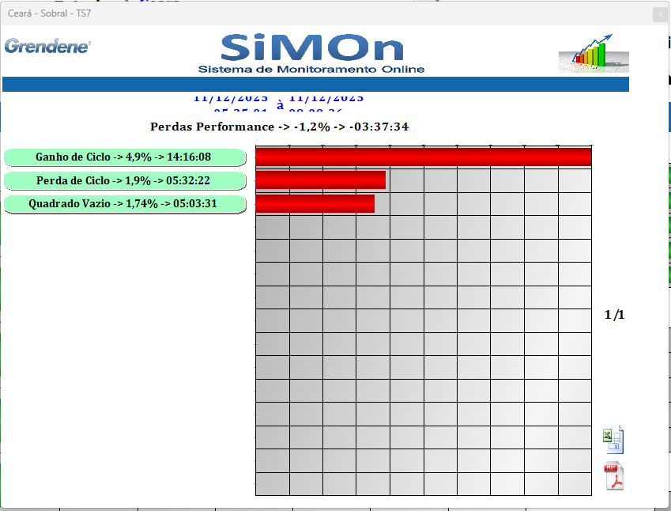2.1.5 Qualidade
Clicando na opção perdas de qualidade, o usuário poderá gerar relatórios de paradas (com peso), tanto percentuais como horas e quantidade de perdas, além disso o usuário poderá escolher gerar relatórios de um motivo específico.
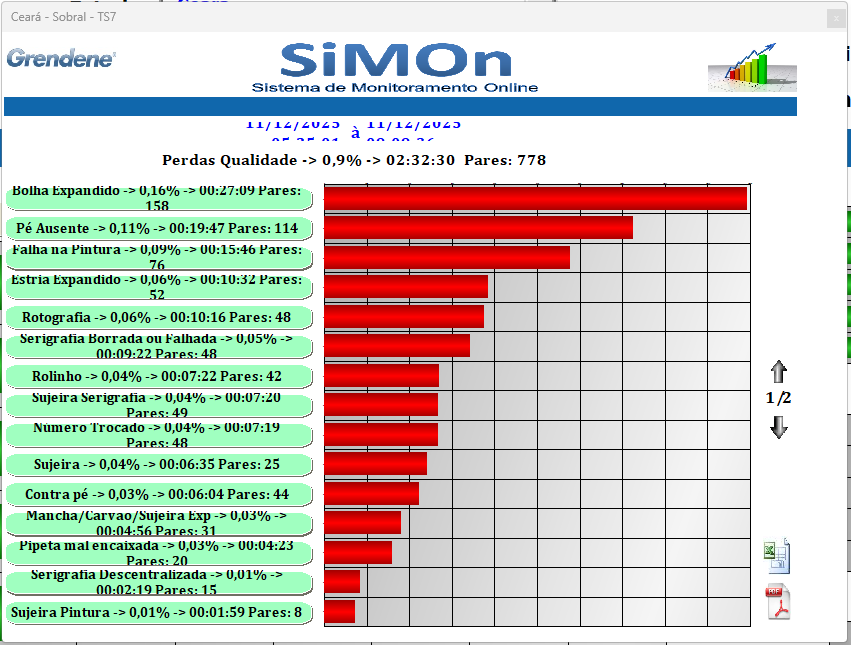2.2 Relatório de manutenção
O relatório de manutenção permite que o usuário gere um arquivo CSV com os dados de paradas relacionadas à manutenção ou matrizaria, a tela segue um padrão simples onde o usuário seleciona a fábrica, o setor, a máquina e o período desejado para análise, além disso é possível selecionar um motivo específico da respectiva família.
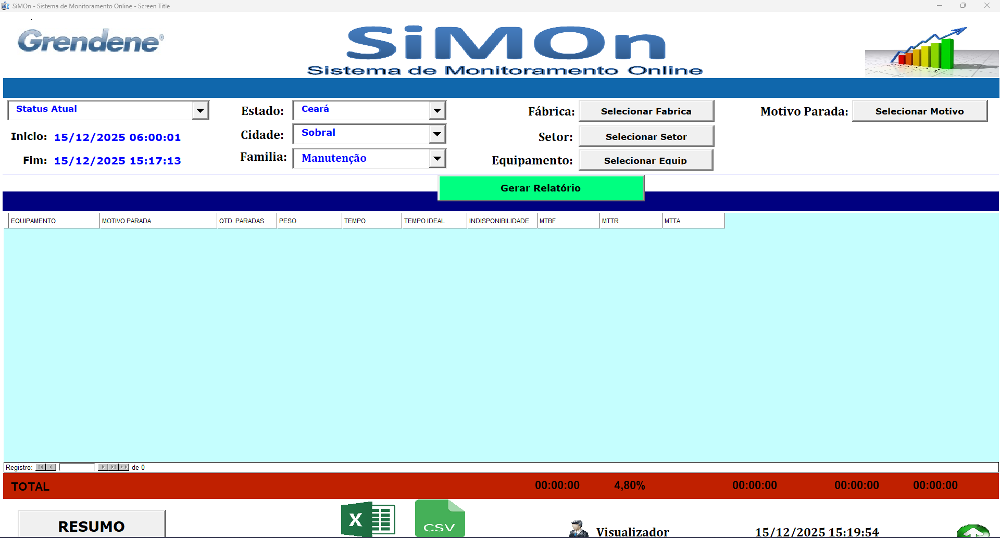Observação: O relatório de manutenção foi desabilitado para o usuário final no SiMOn Elipse, por tanto o mesmo não estará disponível para geração de relatórios.
2.3 Relatório comparativo
O relatório comparativo permite que o usuário compare dados de múltiplas fábricas, setores, máquinas ou produtos ao mesmo tempo, a tela segue um padrão simples onde o usuário seleciona as fábricas, setores, máquinas e o período desejado para análise.
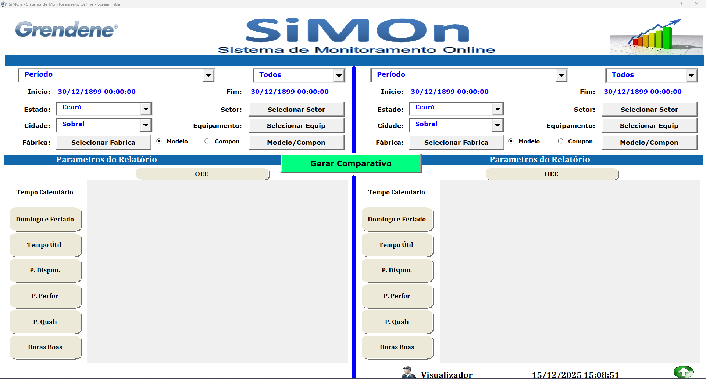Após fazer as seleções desejadas, o usuário pode clicar no ícone do Excel para gerar o relatório comparativo em formato CSV apenas de um pilar por vez.
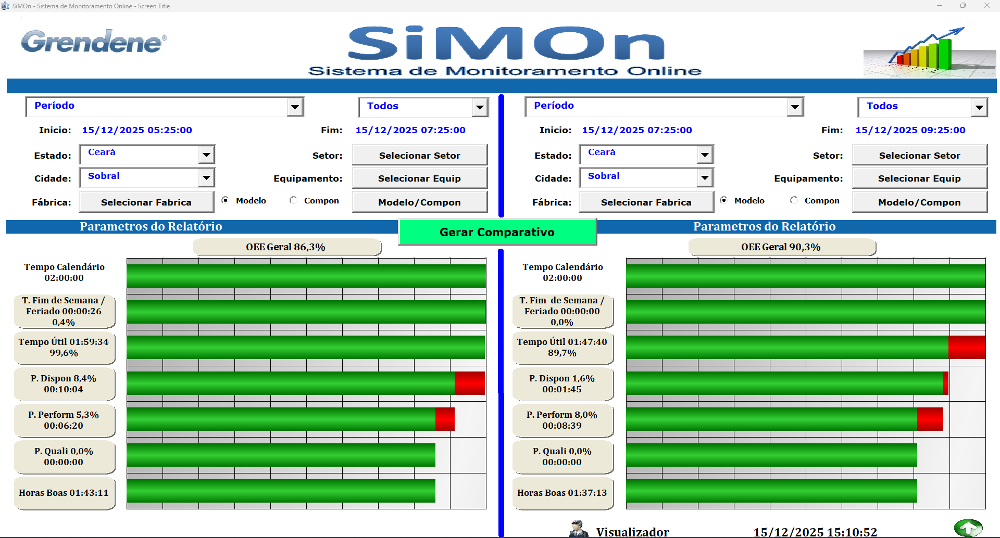A seguir um exemplo de relatório comparativo de disponibilidade gerado pelo SiMOn Elipse. No exemplo abaixo foi gerado um comparativo da mesma máquina em dois horários diferentes.
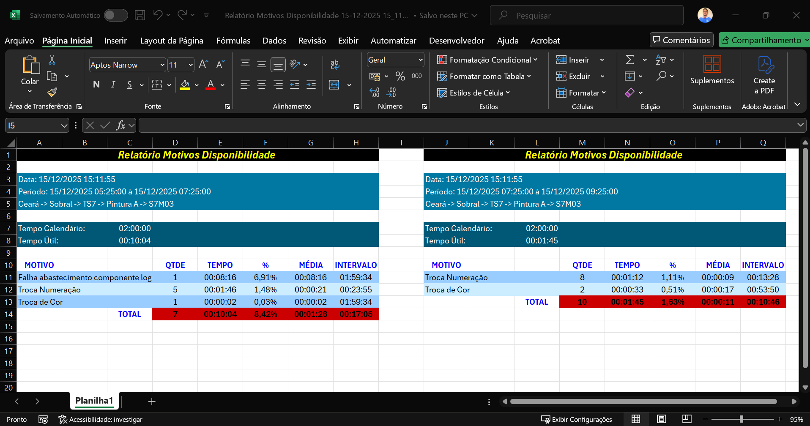2.4 Relatório múltiplo
O relatório múltiplo permite que o usuário gere um arquivo CSV com os dados de todos os pilares do OEE de mais de uma fábrica, setor ou máquina, a tela segue o mesmo padrão das anteriores.
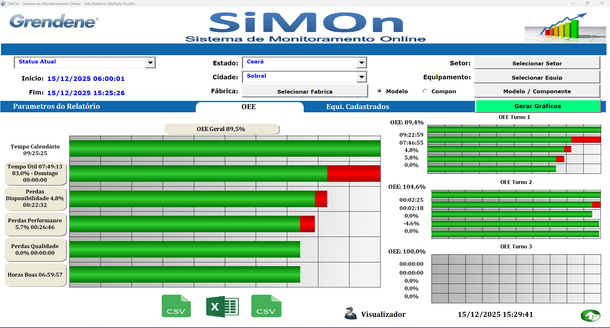2.5 Relatório performance
O relatório de performance permite que o usuário gere um arquivo CSV com os dados relacionados à performance e tempo útil, a tela segue o mesmo padrão das anteriores.
Com esse relatório é possível extrair dados de ganho de ciclo, perda de ciclo e quadrados vazios ou moldes isolados, tanto percentuais como horas e quantidade de ciclos.
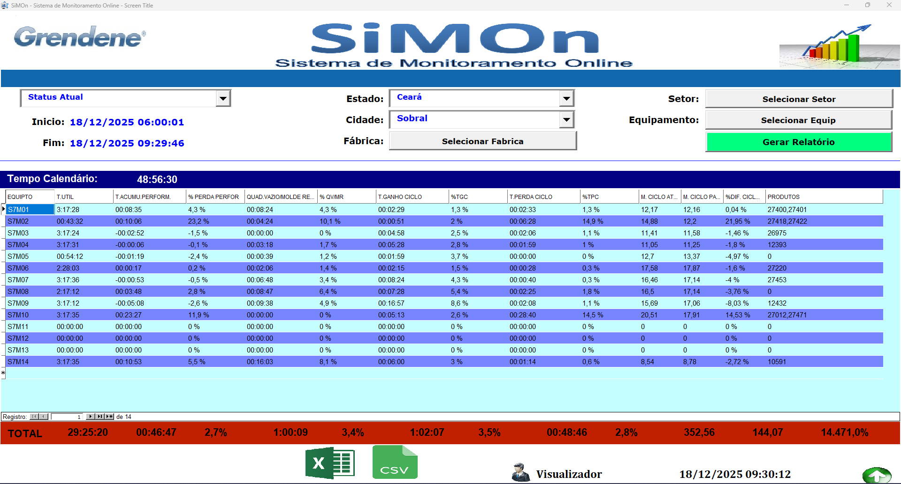2.6 Relatório andon & relatório comparativo andon
Observação: Os relatórios andon e comparativo andon foram desabilitados para o usuário final no SiMOn Elipse, por tanto os mesmos não estarão disponíveis para geração de relatórios.
2.7 Relatório de produtos
O relatório de produtos permite que o usuário gere um arquivo CSV com os dados de produção relacionados a produtos específicos, a tela segue um padrão simples onde o usuário seleciona a fábrica, o setor, a máquina e o período desejado para análise.
A ideia desse relatório é somente de identificar os produtos que estão rodando no momento da geração do relatório, não sendo possível extrair dados históricos.
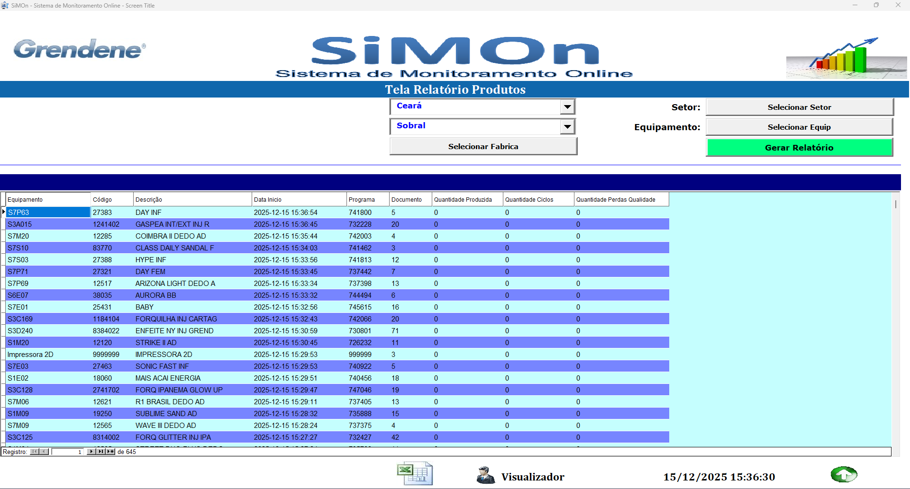Observação: O relatório de produtos não permite a seleção de um período específico, sendo assim, o mesmo sempre gerará um relatório com os produtos que estão rodando no momento da geração do relatório.